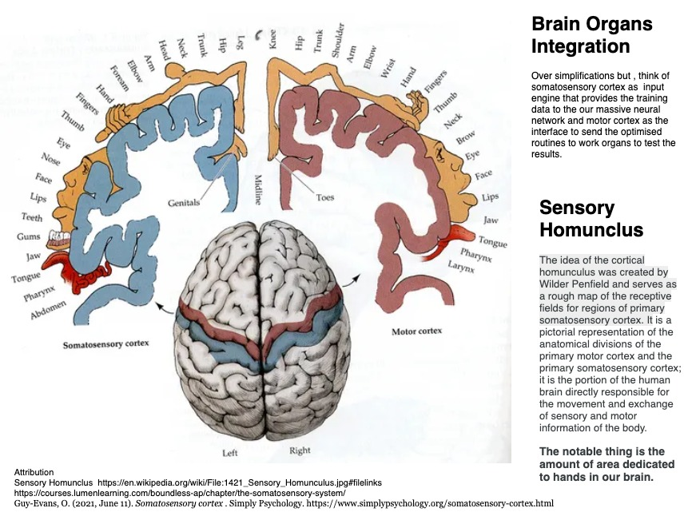

`Abhyasa`
One thing is pretty sure that the human life is a gift. I guess there is no debate that we are kind of the keepers of this land. And if there is one thing that sets us apart from fellow species, that would be our ability to learn and train ourselves. Well, animals do adapt to their surroundings but that is more of an evolutionary process. It takes very many generations for a species to adapt to a new reality. They may gain perfection in what they do but it is hard for them to adapt a new environment rather quickly. We can sure train dogs or horses - our pets ; to some extent, but the behaviour thus developed doesn't appear natural. On the other hand, we humans , with little practice or exposure, we are capable of truly excelling in new locales. In fact, we flourish in changing landscape. In a way , we are more like a general purpose chip while most other species seem to be programmed for a specific task. They have limited latitude to innovate while we can train ourselves into very different skills. No wonder, staring from the Africa, we spread all over the globe and now we are looking at new horizons such as Moon and the Mars.
We know, practice makes us perfect. The question is why ? Why is it that we get better with each iteration? It is so fundamental that we don't even notice though its in the basis of all our accomplishments. We owe our survival, as well as the rise to this very basic nature of ours - that we get better with each repetition.
In the last section we expanded the hypothesis that we can decrypt the knowledge by observing the actions . Actions that it guides us into - our Karma. We also saw that the prerequisite is to do away the expectations. Which means we need to detach ourselves from the sensory overindulgences. This is a subtle change - not something that will upside down our lives. The idea is NOT to despise the senses or the sensory pleasures. Survival is after all important. The idea is to start investing time with actions - may be couple hours everyday. Krishna says ...
Yah [one who] Tu [but] Indriyani [the senses] Mansa [ by the mind] Niyamya [as a routine] Arabhte [ndulge in] Arjuna [arjuna];
Karm-Indriyaih [with the active work organs] Karm Yogam [ritual of action] Asaktah [without attachment] Sah [s/he] Vishishyate [excels]
One who initiates actions by regulating the senses with mind, engaged in
Karm Yogawith active work organs, and detached to the outcomes , that person is special -vishishyate, s/he excels.
What does regulating the senses with mind mean ? In classical Hath Yoga, we have a metaphysical model connecting our spiritual being with the physical body. The human experience is said to have fifty emotions , what we call vritis attached to lower five Chakras . For example the vrittis of hope and compassion are attached to the heart Chakra, what we call Anahta. We will dive deep into the Chakras and the vrittis attached to them when we discuss about the "senses" in upcoming chapters. For now, suffice to say that Hath Yoga describes five primary senses and five secondary senses. So put together we have ten senses. This is a slight change from what we normally hear that we have five senses. Hindu scriptures and particularly the Hath Yoga describes ten senses.
Thus we may express fifty emotions through ten senses which means a total of five hundred expressions. Fifty multiplied by ten equals five hundred. And each of the expression, can be one that creates bondage with our sensory reality or the one that relieves us from it. Kinda positively charged or negative connotation. Thus in all we have a total of thousand expressions that are rendered by our mind Chakra; what we know as Sahsrara. In Hindi (or Sanskrit) Sahsra means "one thousand" ; Sahsrara means something that controls (or regulates) thousand activities. Thus the name of the Chakra itself is Sahsrara Chakra- the mindChakra`.
So regulating the senses with mind means, being able to manage our emotional responses and being able to decipher metaphysical from the physical. Why - because we know desires primarily exist in the metaphysical systems. Thus Krishna says, one who regulates the senses with the mind and indulges in actions without any expectations of outcomes; is a special one .. Because once we initiate the actions in such a fashion, practice gets easily accessible. Training becomes a ritual. And we get better at a specific thing . But we already knew that - Practice makes us perfect! The question was why does practice makes us perfect ? A nicely done model of Hath Yoga or just the words of Krishna should not be the only reason to invest our precious time into practice. The idea must appeal to our rationale. We can possibly look at the science to understand it better. Though this topic kinda falls at the intersection of religion and spirituality, we could still get some clues from technology. The good news is modern science has unraveled this mystery. In fact we are applying the idea of neural networks, the things that are there in our brains, to solve some of the most daunting challenges of our time through what we all know as machine learning or artificial intelligence.
The most versatile neural network
Our brain is an amazing learning engine. In Hath Yoga, as we said, brain is symbolized by Sahsrara Chakra, the top Chakra with a thousand expressions attached to it. We can call it a neural network; order of magnitude bigger and way more sophisticated than any of the AIs we have built to date. For example the GPT3, the biggest of the artificial neural network has some 185 Billion parameters. On the other hand, though not an "apple to apple " comparison, a human brain has roughly 86 Billion neurons. Each of the brain neuron , on average, has approximately 7000 synapses. And each synapse is similar to a parameter in the silicon based networks. Which means we have roughly 60 Trillion parameters. Let it sync in .. 86 billion neurons multiplied by 7000 synapses each, we are talking 60 Trillion parameters in a single human brain. Each one of us is hosting a super general purpose AI in our heads that is approximately 300x the largest silicon based AI built to date. And we have seven billion brains in humans only here on this planet who can learn and collaborate with each other. Add to this trillions of brains of plants and trees; and the other species who we haven't yet learnt to communicate with. Imagine the massive neural compute we have at our disposal. In a way we have an immense natural neural cloud continuously learning, reconfiguring and evolving itself.
I am sure the man made neural networks such as GPT3 will grow fast, just like integrated circuits. They might follow the Moore's law. And one day they might surpass our own brains but the real question is will they ever be as efficient as the ones we have. From efficient I mean the "compute to energy" consumption which basically means cost effectiveness. It might take machines millions of years to reach the efficiency and portability that we already have. They will essentially need to go through the similar, or may be a bit accelerated, evolution cycle as we already have. And I doubt they will ever be as interoperable as we are because the biases pre-built into them - our biases. Thus as a side note, the AI threats are quite misplaced and that means the possibilities we should focus on are the AI augmenting what we already have. Not that AI is our enemy. So go for that self driving car :-)
Not only the brain power, the amazing integration of this compute with our "actions organs" ; for example our hands alone are linked with 200,000 neurons. And each of the neuron has on average 7000 synapses. That is almost one and a half billion synapses or parameters in our hands alone. They might seem tiny but if you draw them in proportion to the surface area of our cortex dedicated to each of the sense or work organs, hands are in fact, the biggest of all the limbs. You must have seen the picture of famous Homunclus Man

In essence, we are , not only a vastly superior network, we are also a full package. A complete bundle of hardware and software for data collection , optimization , as well as testing the results with continuous feedback and improvements. That said, we are fundamentally designed to explore the physical situation we are in. Which means we have two goals - first , to extend our longevity through survival or perpetuating our genes and the second - to explore , immerse and understand the reality we are in. The second goal is what gives us our eternal quest for the truth, a constant chase to seek the deeper and deeper layers and to finally know who we are. In a way, the first goal too is an enabler for the second ..
Karm Yogais a way to leverage this sophisticated apparatus to its full potential for the second goal.
Why skills
In previous section "Continuum", we saw that it is a useful idea to build skills because history rhymes in our circular underlying reality. The question is which skill ? How many of them ? Part of the challenge is we are always unsure where to invest our time. We seek biggest bang for our bucks :-) Don't we ?
If you are going to say a potluck party, you do want to carry a home made dish. You pitching in with just one dish, gives you access to the entire table. The knowledge-verse we live in, kinda works on the same pattern. If you bring just one skill to the table, the entire knowledge base is yours to enjoy, of course, without any obligation. On the other hand, if you go empty handed, your own conscious will make you feel bad. It doesn't really matter what you bring as long as you put in efforts to cook something. Just one appetizer or an entree. In a way, mastering just one skill is the key to all that is there to know. Not only you can share the skill with others and seek information from them in the physical world, you actually learn all that is there to learn in the process of mastering something. In a way, process of mastering a skill is more important than the skill itself. As we said in the last section, as we get steadfast on Karm Yoga, even the nature of work doesn't matter. Thus Krishna said ..
Nityam Yazne Pratishtitam
Situate yourself into your
Yaznaeveryday. He didn't say what type ofYaznaor what type of ritual.
Training the beast
The next question is how do we train? Now, in modern day science, there are a number of studies done on the sleep cycle. They say we have four stages of sleep and the third of them being what we call REM sleep. This is the cycle, roughly around two hours that we dream . And one of the theory of the sleep cycle is that at this stage our frontal cortex, which is kind of the boss of the mind, she goes on vacation. So there is nothing there to take inputs from the senses. So pretty much all our senses as well as our work organs are paralysed. This is the time when our mind runs through the things that we enacted in the day and approach them with alternative possibilities. Millions of minor tweaks to find the routine that works best. This is the reason when we wake up next day, we are better prepared to take on the tasks. Things appear simpler. Each iteration of Yazna and the sleep cycle makes us perfect.
REM sleep is mandatory for our well being. Despite severe competition for survival, evolution has prioritized REM sleep every day. I mean, from survival standpoint, it doesn't appear an intelligent choice to debilitate our bodies even for a moment in a world full of predators. This shows the importance of training our massive neural engine. What appears to be a wrong move is actually an evolutionary advantage. Indulging in actions, is training our mind to unlock the possibilities never known before. In Hathyoga, the mind is known as Sahsrara Chakra, as we said before. The top most Chakra with 1000s of expressions attached to it.
Thus, in a way,
karm Yogais theYogaof mind. Repeating a set of actions -Yaznais a way to train the mind. It is obvious , if we focus on one specific thing, mind will train easier than if we keep on changing the problem set. On the other hand if we feed the mind with desires of a specific outcome, we are ignoring a huge supercomputer we have in our heads and rather asking it to do a task of a puny calculator, that is to find out the probabilities of the outcome that we are chasing. It responds. It tells you exactly what it feels are the chances of the outcome that we are chasing. But as we said, in the last chapter, in real world , where our expectations have a substantial degree of separation from the actions, the odds that our mind returns are at best fifty fifty , random . This is what creates the "Doubt" , In Gita we call itSanshya. We will talk aboutSanshayain detail in the later chapters. Suffice to say here that if we feed out mind with valid data sets - the training data, it is an amazing self learning and self healing super computer; if we dub it with wrong questions - probability of outcomes, it is what creates mess of doubts in our lives. So much so that we need to use sedatives , drugs , alcohol to put this beast to a temporary rest. In the modern lifestyle, where we have an explosion of distractions and desires, thus,Karm Yogashows a proven path forward..
That is the reason Krishna said
Na [not] Karmnaam [of righteous action] Anarambhan [the ones that are never initiated] Naishkarmyam [a stage where one is beyond actions - such as Krishna] Purushah [a man] Ashnute [one who achieved said stage];
Na [nor] Cha [also] Sannyasnat [one who has renounced everything, towards them] eva [certainly] Siddhim [distinguishable success] Sam-adhigacchti [easily goes towards].
A man doesn't get to the status of "beyond actions"
Naishkarmyamwithout initiating the actions. Even theSanyasins- Those who have renounced everything; don't attract any distinguishable success.Tasmat Sarv Gatam Bramha , Nityam Yazne Pratisthitam
Always situate yourself into your
Yaznaand create your own "Unique" skill for the all pervadingBramha- the entirety.
Actions to a unique skill
Repeated iterations of actions Yazna , along with stable Sahsrara - the mind Chakra; lead to what we call the "Skills". Skills are thus a marriage of intelligence and knowledge. Intelligence is what leads us to collect the training data in our respective field or role or you may call it the "purpose". We will talk about the word "Purpose" in a bit because there is a bit of confusion around this word. For now, Knowledge is what our neural engine produces - an optimized efficient way to do the things. This knowledge is something that can't be communicated. Fire can't burn it and air can't dry it because the knowledge itself is not in the realm of the manifested. Everyone has it but it needs to decrypted to enable the skills . Being skillful is a proof that it exists but that doesn't mean we know it inside out. You can feel the presence of this force when you render your skills. But if you continue on this path, with three qualities , Krishna says - Asakta , Muktsanga , Samachara - as a Karm Yogi , this knowledge is accessible. Needless to say, that our machine will produce based on the training data we put in. If we feed it with desires and sensory pleasures, it will create unbreakable bondage. If we feed it with details of actions with three said pre qualifiers, it will fill them up the knowledge. Krishna says ..
Yajna-arthaat [Done for the sake of Yajna] Karmanah [actions] Anyatra [otherwise] Lokah [world] Ayam [this] Karm-Bandhnah [bondage by work];
Tat [For it] Artham [for the sake] Kaunteya [O son of Kunti] Mukt-sangh [liberated from the curse of association] Samachar [same compassion for everyone].
Actions done for the sake of
Yazna- the ritual of actions ; areKarmas, rest everything is a bondage to this world. Thus do your actions free from the curse of association and treating everyone with same compassion.
The skill that we thus create is unique to us. We can publish the action list. But only we know how the thing actually works. Someone performing the same set of actions may or may not get the same skills. This is because actions when communicated in a format that someone could grasp , can not be too detailed or else their senses lose interest. Even great visual communication (think "Game of Thrones":-) can only go to a certain level; beyond which there is a scope of individual's interpretation. That's the reason we have multiple interpretations for everything. Even Gita has thousands of interpretations including this one. That space , that exists beyond sensory comprehension, is, where the receiving conscious agent is supposed to fill in their own knowledge --> decrypt a piece of their copy of the [protected] knowledge. As they say, "there is always something to be read between the lines".
In essence skill is uniquely yours because the part of knowledge attached to your skill is uniquely yours. No one can take away the swimming you have learnt . There is no way even for you to communicate how "you" swim. Because after a certain degree of detail, it goes beyond sensory comprehension no matter how much you try to spice it up.. In a way, each one of us has a full copy but each one of, as part of this entire system, has a little piece decrypted uniquely with us. We all collectively, along with all the other manifestations , form the system - Bramha. In essence, if we identify ourselves as part of this entirety, with our little piece and easy access to the rest, we already know what there is to know. If we continue to think ourselves as unique, we can choose to take trillions of years to decrypt the entire knowledge - one skill at a time.
Karm Yogais thus indulging in actions for all pervadingBramha. Losing your identity and desires staying satiated in the actions that come to you as your role.
There is no Capsule !
We can inspire ourselves to get into Yajna by say a performance - watching someone render their skills effortlessly, but we can't learn anything from such a communication. Only way we perfect our skill is through practice. There is no "communication capsule" that could transfer the skills. I can't start singing like Elvis by watching hundreds of his clips on say Youtube . I need to practice myself. I shall need to fill out the configuration of music with my own voice. Filling my own voice at the right notes is what the "Practice" is for. If you seen the popular science fiction "Matrix" - the knowledge could be transferred through a brain interface, but Neo still needs to practice those skills in a simulation . In essence , lessons are NOT skills , they are just enablers. Skill is an after effect of our practice and of course the sleep cycles:-) Good or bad. Skill is effortless orchestration of a set of actions - Violin creating the music in your hands , coordinated motion of entire body to enable you skate board , dance , music , code - something that you indulge in with your work organs and give your mind a chance to optimize the routine.
Now you may say, I can never be an Elvis :-) And you are right. My skills must be grounded in my reality. But even then, doing actions is still better than no action - inaction. Krishna says ..
Niytam [prescribed or pre decided] Kuru [do] Karma [actions in performance of duties] Tvam [you] , Karma [actions] jyayah [better] hi [certainly] Akarmanah [inaction];
Sharira [body] Yatra [journey] Api [even] Cha [also] Te [your] , Na [never] Prasiddhyet [something acceptatble because it is popularly agreed upon by all] Akarmanah [inaction].
Perform your prescribed or pre decided duties for such actions are certainly better than inaction. Even for maintenance of your physical body, "inaction" is not a popular choice
Knowing yourself
Skill is your decrypted knowledge . The process of developing skills is essentially knowing yourself. Lets say you have perfected half marathon - it means you know how your heart would pump faster in the beginning so you need to pace down. You also know, irrespective of competitors, you need to maintain your speed or else your knees would crack at 8th mile. Practice rounds have trained you what to eat, how much and when to sleep night before the big day. More refined the skill, better is your knowledge about yourself.
If you make every aspect of your life a "skill"- breathing, eating , sleeping - the entire routine, you will know a lot about yourself. Such life style is
Karm Yoga.
Manifestation
In a way, skill is an automated module that may be played on a press of button to deliver something. For example - if you are a singer, you can sing on demand in any party , The act of singing on a venue is manifestation of your skill. A skilled carpenter manifests wooden artifacts. A skilled mechanic knows which part of your car needs a fix. She gets there first rather than random hit and trial at your cost. In a way, skills are the know hows to configure the resources in a specific way so that they serve a purpose. As you know, resources can be configured in billions of other ways and that is what we refer to as the entropy or the chaos of the system. Holding the resources in a specific configuration so that it serves a purpose is what skill is.
The universe we observe through our senses is nothing but manifestations. Simple to complex. Automated. Interwoven. But they are all "Information". They can only indulge you or inspire you. System provisions them for you based on what action plan you have in mind. What is your Yazna.
Test - As I said,
Karm Yogais a subtle change. We approach the activities or problems, rightly thinking that our mind is our partner in solving them. But we make a tiny mistake. We expect our partner - that is our mind to navigate us to the most optimized routine the very first time . Isn't that too much to ask even for the largest natural intelligence system to respond without any training. And when it fails, we feel as if we are let down. We blame ourselves as if we are good for nothing. May be people laughed at us. On the other hand if we feed our mind with desires, it tries to work out the probabilities of the desired events which normally leads to doubts; what Gita callsSanshyabut will get to it later.Let us approach one activity in a completely different way. And if you don't want people to laugh at you, feel free to keep it a secret.
Choose one fairly complex activity - may be a complex dish you wanted to cook. Or a difficult run say 5 K assuming you have never run before. Or a song you thought you could never sing. Anything. A coding challenge, a writing goal, speaking in a new language ; whatever you feel like fun. Now do this activity for one month just for your mind. Think that you are doing these actions for no apparent "purpose". You are just supplying data to your mind. Devote 30 minutes everyday. And try to see the improvements you make. Key is, don't attach any expectation of outcome. You are NOT trying to become the best chef. Or trying to win a marathon. You are dedicating these 30 minutes just for your mind. There is no weight loss goal.You don't intend to rock the crowd like Elvis :-) You are betting on wasting these 30 minutes to give your partner a chance. Hopefully, your brain will do you a favor. You will be pleasantly surprised how your work organs improve on the routine. Make sure to not let desires creep back in.
Even if doesn't work out the way you wanted , you will at least have fun for thirty minutes daily :-) ..Feel free to keep a log. See how the things you need to enable you accomplish this drill automatically show up. Try to measure how the system Bramha is trying to help you out ..
Purpose
Before we close this section, let us try to demystify the word "purpose". Most commonly we attach purpose to a state. An accomplishment. An outcome. And we continuously seek the outcome. It could an altruistic , a moral goal , a higher purpose but nevertheless, it is still a desire of a specific outcome in the near future. Such an indulgence into practice or Yazna is what we call Sakaam Yazna. It is not bad to be passionate about something but Gita says it is not a preferred way to realize the peace or knowledge.
Now think of "Purpose" as a complete focus on what actions we are supposed to do - the righteous actions. The actions that matter in our current situation. Situation in terms of our location, circumstances where ever we are. A change in vantage from "where we should be? " to "where we are?". In other words a true appreciation of our physical reality. And even more of the actions that we need to take up in this current situation to indulge our mind into training so as to find an optimum solution, a path forward.
Millions of choices have already been exercised for us to be where we are. In terms of physical and mental capabilities. In terms of our location , access, education. We can't deny that we are where we are because destiny has brought us here. In this state , how we are going to seek the environment to provide data to our mind. What can we train our mind into and help decrypt a piece of knowledge for the all pervading Bramha. This little piece is our key to be a part of much bigger system. In essence, we can find purpose wherever we are. Purpose is not changing yourself; purpose is realizing who you are.
Now, lot of people say seek and don't settle down till we find our purpose. This is not entirely wrong. They are probably talking about the churn we must go through before we understand that desires are quite misplaced. And the solution is seeking the pleasure in actions. Such actions can be selfish. And obviously their results are short lived. If we don't want to short sell ourselves, the key is to approach actions with three pre qualifiers - Asakta detached from the outcomes, Muktsanga - free from the curse of association or external influences. And Samachara - Equanimity , treating everyone with same compassion, without bias. Krishna says ..
Saktah [Those who are attached to outcomes - passionate] Karmani [of prescribed duties] Avidvansah [the ignorant] Yatha [the way] Kurvanti [they do] Bharata [O descendent of Bharata - a name for Arjuna] ;
Kuryaat [must do] Vidvan [learned] Tatha [same way] Asaktah [without attachment] Chikirshuh [desirous ] Lok-Sangraham [ for the greater good]
The way ignorant people chase the outcomes from the prescribed duties - passion. Learned do exactly the same for the greater good without any attachment to the outcomes.